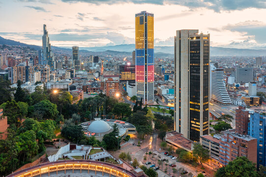

Bienvenido a Bogotá, una ciudad vibrante que combina historia, cultura y modernidad en el corazón de Colombia. Rodeada por los majestuosos cerros de Monserrate y Guadalupe, esta metrópoli es un destino lleno de contrastes, donde la arquitectura colonial se mezcla con rascacielos modernos.
Explora sus calles llenas de arte urbano, disfruta de la gastronomía local en la Candelaria, y sumérgete en la riqueza cultural de sus museos, como el Museo del Oro y el Museo Botero. Además, Bogotá es el epicentro de la innovación y la educación en el país, con una oferta diversa de eventos, festivales y experiencias para todos los gustos.
Descubre todo lo que Bogotá tiene para ofrecer y vive la magia de la capital colombiana. ¡Tu aventura comienza aquí!
 La imagen muestra una vista panorámica de Bogotá, Colombia, con sus rascacielos, edificios modernos y áreas verdes.
Bogotá, la capital de Colombia, se encuentra a 2.640 metros sobre el nivel del mar, lo que la convierte en una de las capitales más altas del mundo. Su clima es fresco durante todo el año, con una temperatura promedio de 14°C.